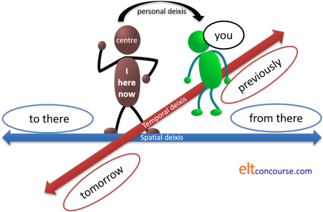
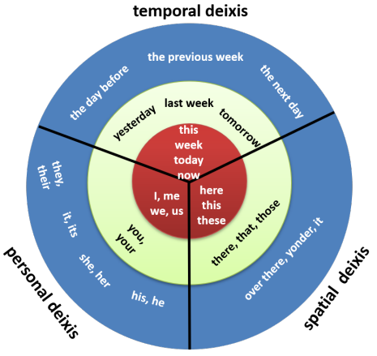

Deixis
 |
| centred |
Deixis is derived from the Greek word for reference or showing
(the adjective is deictic, incidentally). It
concerns the ability of language to identify objects, times, people
or ideas with reference to something else. In other words, it
refers to things which can only be understood in some kind of
context.
In simpler terms, deixis refers to the way we signal
here or there, now or then and
you or I.
A definition:
The name given to those aspects of language whose interpretation
is relative to the occasion of utterance
Fillmore (1966) in Harman
(1989)
If, for example, you say:
- I like it here
- We can only understand what here refers to by knowing
where you are – here is a relative
not absolute concept of space.
The centre is here. - I like him
- We can only understand what him refers to by
knowing who you are.
The centre is I. - She is going tomorrow
- We can only understand what tomorrow means by
knowing when this is said.
The centre is now.
In the first sentence, here
is an adverb (although some analyses will refer to it as a pro-form
standing for this place) but deictic pointers can fall
into various word classes.
In the second example, the pointer is a pronoun and in the third
example it is another adverb (also classifiable as a noun acting
adverbially, in this case).
 |
The centre |
The deictic centre is the place, time or person from which everything else is relative. For example
- I gave it to him (the deictic centre is I – the person from which him can be understood)
- I went yesterday (the deictic centre is the time of speaking: now – without knowing that, yesterday is meaningless)
- I will sit there (the deictic centre is the speaker's position – without knowing that, we have no idea where there is)
It is impossible to understand a simple sentence such as:
We are going there tomorrow
without knowing what the deictic centre is. In other words, we
need to know who is speaking, when they are speaking and where they
are speaking. We also, incidentally, need to know whether
we includes or excludes the hearer.
 |
4 types of deixis |
- Personal deixis
- refers to other people (apart from the speaker / writer)
- Temporal deixis
- refers to time other than the moment of speaking / writing
- Spatial deixis
- refers to a place other than here
- Discourse deixis
- is not in the diagram below. It refers to something mentioned earlier in a text (spoken or written) or to something which will follow, in other words, a stretch of discourse. This is sometimes referred to as Textual deixis.
This diagram may help a little.

We can, in fact, move the centre away from the speaker / writer and we often do. For example:
- Keeping the centre in place:
I am going to London soon
The deictic centre is I and now
There is no shifting of the centre because go indicates movement away from here and soon is related to now. - Moving the centre:
I am coming to see you
The deictic centre has been shifted from here to there because come indicates movement towards. In many languages, that would be more logically rendered as
I am going to see you
but, in English, that would be ambiguous because we don't know if the going to bit refers to a current intention or a movement away from here.
In English we conventionally move the centre to the person being addressed. It is considered polite.
This shifting of the centre accounts for a great deal of
confusion with related verbs such as bring-fetch-take and
come-go in English because other languages conceptualise
spatial and temporal relationships differently. Japanese, for
example, always uses the equivalents of come and go
from the point of view of the speaker. German tends also to be
speaker centred in this respect.
It results in
errors such as
*I'll bring you to the station
*I'll go to you now
Are you coming to the cinema with us? *Yes, I'm going.
Diagrammatically representing the deictic centre to learners
is often helpful. Like this:

In the last example with bring the speaker remains on
the left but has moved the centre to the hearer on the right, hence
the use of bring rather than take and come
rather than go which would be
the preferred forms in many languages.
Much confusion and distress can be avoided by simply explaining to
learners that in English we often imagine ourselves in the hearer's
place (moving the deictic centre) and that explains why we can say
say:
I'll bring a bottle to John's party next week
The speaker has simply moved the centre to John and therefore is
happy to use a verb which means towards me rather than
away from me.
The speaker could also have said:
I'll take a bottle to John's party next week
without moving the centre but if she were speaking to John on the
telephone, it is almost certain that she would use bring
because that is considered courteous.
Out here on the web, people have posted all kinds of weird reasons
for the anomalous use of these verbs in English but it's actually
quite simple once one is armed with an understanding of the
rudiments of deixis.
 |
Personal deixis |
There are three forms of personal deixis:
- Those directly involved – the speaker and the
person / people addressed:
I am leaving now
Can you help? - Third parties not involved in the exchange but the subject
of it:
She's sitting next to you. - People mentioned in the exchange but not nearby or involved
in it:
I wanted to be here earlier but they delayed me
 |
Gender and pronouns |
English does not distinguish between nouns by gender unless the
sex is clear but number is another matter. In English,
they is often used to refer to a singular person whose sex is
not known:
The person who wrote this is illiterate;
they can't even spell.
The use of they, their and them to refer to a
singular entity whose sex is not known or irrelevant is attested in
English from at least the 14th century. Only when
Latin-influenced grammarians rose to prominence did the insistence
on the non-marked use of he arise. The use of the
plural pronoun and determiners, they, their, theirs, to
denote a singular referent is making something of a comeback.
English also has no gender marker for plural entities: you,
we, they are all unmarked forms. When we say
They arrived late
we have no idea whether the group is male only, female only or
mixed. We do not even know if we are referring to people or
objects.
Other languages distinguish, e.g., between plural
females and plural males (such as French does with elles
and ils) so it is clear who is being referred to. For
a mixed group, the masculine plural is
used in most languages which make this distinction. However,
in French the word for person is personne and it
is feminine so when the plural (les personnes) is referred
to, the appropriate pronoun is elles even if all the people
are male. Similar phenomena exist in other languages (Spanish,
for example).
There is a guide, linked below, to how languages handle gender and
how gender marking in English may be avoided.
 |
Gender and nouns |
Languages which distinguish all nouns by gender (as very many do)
will usually demand the use of the gender-specific pronoun.
For example, in both German and Greek, the word for group
is feminine (die Gruppe, η ομάδα [ee omada]). In these cases,
the feminine pronoun must be used to refer to it, even if everyone
in the group is male. We get, therefore:
The group has arrived and she is getting on her bus
English, incidentally, gets confused here and speakers will use
a plural pronoun to refer to the group (which is clearly a singular
count noun), so we can have either:
The group has arrived and it is getting on
the bus
or
The group have arrived and they are getting
on the bus
We can even allow:
The group has arrived and they are getting on the bus
in which we promiscuously mix singular verb forms with plural
pronoun forms.
For more, see the guide to concord linked in the list of related guides at the end.
 |
Social deixis |
We claimed above that there are 4 main categories of deixis:
personal, spatial, temporal and discourse.
Some writers (e.g., Levinson, 1983) also identify a fifth category,
social deixis. It comes in two flavours:
- Relative social deixis
In many European languages there is a distinction between familiar and polite forms of the pronoun you and the distinction signals closeness and/or formality. This is called the T-V distinction after the French (or Latin) tu and vous forms. German, incidentally, also has a plural familiar form (ihr) which many Romance languages in Europe lack.
Many East- and South-Asian languages, such as Japanese, also have distinguishing honorifics (such as san) which make more complex and subtle social relationships clear.
English is defective in this area, making no distinction in the pronoun between social closeness or distance or even the number of people addressed. It just uses you.
This form of deixis is referred to as relative because its use depends on the relationship between speakers / writers and hearers / readers. For example, whether or not one uses the familiar or polite pronoun for you in most languages which make the distinction depends on closeness of relationship between speakers and sometimes on the addressees' provenance (in Greek, for example, the familiar form is customary for all fellow residents of a village regardless of how well they are known to the speaker). - Absolute social deixis
In this area English is somewhat richer in having conventional ways to address people especially in certain, usually formal, settings. Such terms include, e.g., Your Honour, Ms., Miss, Mrs, Sir, Madam, Your Grace, Captain, Mr President, Your Lordship, Ma'am, Doctor, Ladies and Gentlemen and so on.
Absolute forms such as these are confined to certain settings, of course, and a judge is unlikely to be addressed as Your Honour or My Lord by his family and friends although that term would be used even by close contacts in professional settings.
Even when reference is not direct but to a third person, there are conventions of identification so we speak of, e.g., Her Majesty, His Excellency, Mr, His Honour, Mr Chairman, The Very Reverend and so on.
Levinson (1969) gives examples from many languages in which the use not only of terms of address but also syntax, the entire pronoun system and other language items are dependent on the conventions of social deixis. The conventions apply in some languages, not only to whom one is speaking but also to any reference to a third party and even depend on the status of any bystanders.
 |
Empathetic deixis |
This form of deixis is sometimes analysed as a separate type but
here, we'll consider it a subset of social and personal deixis.
It is usually expressed through the use of demonstrative determiners
and pronouns.
It is clear that, in English, that and those are
distal references far from the speaker while this and
these are proximal references, near to the speaker. (For
more, see the following section on spatial deixis.) They are
also used in a metaphorical manner to give a sense of nearness or
distance of abstract ideas.
For example, compare:
This is a problem, isn't it?
These are things we need to deal with
and
That's a problem, isn't it?
Those are things you need to deal with
In the first pair of sentences, the speaker is evoking a sense of
empathy with the use of the proximal pronouns which give a sense of
cooperation and, metaphorically, nearness to both speaker and
hearer. In the second pair of sentences, the speaker has
selected the pronouns to give a sense of distancing from the issue
and there is no or less sense of cooperation and empathy.
Often, a speaker may select a passive structure to enhance the sense
of distance as in, e.g.:
That's something that needs to be dealt with
Those are problems which must be solved
 |
Error |
The different ways in which the learners' first languages deal
with personal deixis is the source of a good deal of error such as:
*The team got off the bus and she ran into the stadium.
or
*The group of friends met at 9 and then it went to the cinema.
which is grammatically sound but almost impossible to a
native-speaker's ear.
as well as stylistic errors such as
You give me that
which is fine in languages in which the pronoun is already marked
for politeness but can cause offence in English if no politeness
routine such as Please would, ... I wonder if you could ... etc.
is used.
Inclusiveness |
In English the form you refers to other people including
the hearer and does not include the speaker and the form we
includes the speaker(s) and may or may not include the hearers.
Other languages do things differently and distinguish between a
pronoun meaning you not including the hearer and you
including the hearer as well as having a separate pronoun for we
not including the hearer and we including the hearer.
English cannot do this and cannot, additionally, distinguish between
they including a third party and they excluding a
third party.
 |
Temporal deixis |
There are two main types of temporal reference:
- Adverbials
The obvious ones are items such as tomorrow, yesterday, the day before yesterday, next year, then, now, afterwards, already, yet, the week before last etc. They are usually adverbs or prepositional phrases acting as adverbials (although an alternative analysis is to call some of them nouns or noun phrases acting as adverbials.).
Absolute dates are excluded from this category so expressions such as the 4th of March 1627 are not deictically related to now in the way that 10 years ago is because it can be understood whenever the sentence is spoken. The prepositional phrase 10 years ago can only be understood by knowing when the statement is made. - Tense forms
There are two types of tense in English:- Absolute tenses such as the past simple or the future with
will. For example:
She sold the house
I will be 35 next birthday
which both refer to time not relative to another time. Deictically, these two utterances are related to now (where we are centred). - Relative or relational tense
forms such as the perfect in English.
For example:
I have broken the lock
I had seen him before
I will have spoken to him
relate deictically to other times:
I have broken the lock
relates to the present because it is now broken and unusable. It is the past within the present.
I had seen him before
relates a more to a less distant past. It is the past within the past.
I will have spoken to him
relates a more to a less distant future. It is the past within the future.
Deictically, relative or relational tense forms relate one time to another, not necessarily the time of speaking.
- Absolute tenses such as the past simple or the future with
will. For example:
For more, see the guides to tense and aspect linked in the list of related guides at the end.
Temporal deixis is problematic when it comes to indirect speech, as we shall shortly see.
Other languages
Some languages do not exhibit relational tense forms so the concepts in English will be obscure. Others may use absolute terms for concepts such as the previous year, the next day etc.
Not understanding the concept of relative time often leads to familiar errors such as:
- mistakenly using an aspect which refers to the present for an
absolute time:
*I have done it in 1984 - mistakenly using an absolute tense form when a relative one is
required (although this is acceptable in some varieties of English)
*I already did it - mistakenly using the simple, absolute form of the tense to
refer to a time relative to a more distant future
*I will speak to him by then
and so on.
 |
Spatial deixis |
In Modern English there are essentially two forms:
- Near the speaker
This is a nice place
I am lucky to be here
These are wonderful - Far from the speaker
I want to move there
That was a wonderful place to spend a holiday
I think those look good
Spatial deixis is usually achieved by the use of:
- prepositional
phrases:
She put it in the corner
They live behind the church - demonstrative determiners:
My colleagues gave me that picture
Do you want this disc? - demonstrative pronouns:
She wants those
I'd be happy with this - adverbs:
Leave it there
Go away - nouns (also analysable as nouns acting as adverbials):
They arrived yesterday
They want to go home
Just as tenses are relative and absolute, prepositions exhibit two forms of deixis:
- Relative position, from where the person is, was or will
be.
If the speaker moves, the sentence may no longer be true:
The house is on the left
I can't see it; it's behind the tree - Absolute position, but often relative to something else, in
which the speaker's position is irrelevant.
The sentence remains true wherever the speaker is:
The car park is opposite / outside / near the school
He has a house in the south of Spain
Unless it is otherwise clear from the context, spatial deixis is centred on the speaker / writer but there are many cases when we can move the centre. Here's an example of giving directions over the phone or in an e-mail:
When you get to the lane, look for a blue gate on the left and that is where I live
If one assumes that the addresser is at home, it is clear that
she/he is moving the centre of deixis to the addressee. From
the speaker / writer's point of view, the blue gate is probably not on the
left and this not that is where home is.
The speaker has also moved the time centre to the future, i.e., the moment the person arrives at the lane
and that may be months away.
 |
Other languages and spatial deixis |
In English, it is often the case that we project ourselves into another place. We get, for example,
when speaking on the telephone to someone who is at home:
I'm coming home tomorrow
In this case, the addressee is not in the same place as the speaker
and is near to or in the speaker's home. In
effect, we are imagining speaking from where the listener is, not
where we are.
Alternatively, when addressing someone who is in the same
place, we will hear:
I'm going home tomorrow
because there is no need to move the deictic centre. The
verb simply indicates movement away from the current location.
It bears repeating that languages differ in the use of simple verbs
like this and it is a source of error.
In fact, in English, not moving the deictic centre may result in confusion or be deliberately done for comic or dramatic effect. Consider the old Tommy Cooper (an English comedian) joke:
So I rang the guesthouse bell and a lady
opened the window and said:
"What do you want?"
"I want to stay here," I replied.
"Well stay there, then," she said and shut the window.
The key to getting the joke lies in the visitor and landlady's different understandings of here and where the deictic centre should be.
Other languages do not move the centre so easily and that accounts for
phone answering messages in many languages which tell the caller
that
I'm not there
not
I'm not here at the moment.
It also accounts for some confusion between go and come.
For example:
Are you coming to the party?
is not the same as
Are you going to the party?
The first implies either that you are accompanying us / me or that
it is my party in my home we are referring to.
The second carries no such sense and may be referring to a party to
which the speaker has not been invited.
There is rich ground for covert error here.
The verbs leave (and depart) and arrive
may also be subject to the movement of the deictic centre.
Usually, if we ask:
Has she arrived?
we are referring to whether or not she has reached the speaker's
place but that may not be the case because the speaker may be moving
the deictic centre to the hearer and enquiring whether or not she
has reached the hearer.
A similar phenomenon occurs with leave / depart and:
Has he left?
may refer to whether the person in question is no longer in the
speaker's vicinity or no longer in the hearer's vicinity.
Old and Middle English, in common with a range of modern
languages including Spanish, Portuguese, Italian, Georgian, Basque,
Korean and Japanese had a third, medial, distinction to describe things far away
from both speakers (yonder is an example)
and many modern languages have this form. It still exists in
some dialect forms of English such as the use of the determiner yon
in Scots.
Modern Standard English can do this but requires a periphrastic form
to make the distinction clear so we have:
this car (proximal and near the speaker)
that car (medial and far from the speaker but
possibly close to the hearer)
and
that car over there (distal and far from
both speaker and hearer)
German uses the same form for the demonstrative determiners that
and those as the definite article but when it means
that or those rather than the, it is
stressed.
Languages which have the threefold
distinction can refer to objects near the speaker, objects
near the hearer and objects far from both the speaker and the
hearer, work like this usually:
- proximal (near me but far from you)
- medial (near you but far from me)
- distal (far from both of us)
Speakers of these languages will often have difficulty deciding which
form is appropriate in English. It results in some covert, and
not so covert,
error such as saying
I want that (when this is meant)
I went here (when came is meant)
and so on.
In other languages, the terms here and there are very differently interpreted and may depend, for example, on whether the place being referred to is at a higher or lower altitude or upstream or downstream from the speaker.
 |
Discourse deixis |
We need to be slightly careful to distinguish here between anaphoric and cataphoric referencing and discourse deixis proper.
Referencing within a text is covered in the guide to cohesion
linked in the list of related guides at the end.
It refers to the use of markers to stand for or link to an item
previously mentioned or yet to appear in the text. For
example, in:
When he got to it,
he found the house was much as he had expected;
the place
was old and shabby.
we have two cohesive devices.
- The pronoun, it, which stands for the house and refers forward in the text. That's cataphoric referencing.
- A general term, the place, which refers back and stands for the house. That's anaphoric referencing.
Both references are to something in the text so they are both endophoric references.
Discourse deixis is different because it does not relate
to a specific item but to a stretch of discourse. Such a
stretch of discourse can be very long or quite short. For
example, the novel The Husband’s Secret by Liane Moriarty begins
with the line:
It was all
because of the Berlin Wall.
In this, the marker It refers to everything which
follows, the rest of the novel, not to a particular item. That is discourse deixis.
It needn't be a literary device, of course, although it often is.
Simply responding to an anecdote with
That's fascinating
is an instance where
one person's entire discourse is referred to with the term That.
Equally, we can include in our own discourse something like
...and that's why ...
or
This is a
good one ...
or
Listen to this ...
and those are examples of discourse deixis;
the first anaphoric and the second and third cataphoric.
 |
this, these, that, those |
The marker this / these can refer anaphorically to a previous stretch of discourse and cataphorically to something to follow but the marker that / those can only refer anaphorically.
At the end of a presentation or proposal, for example, it is
perfectly acceptable to respond with:
That is an interesting idea
This is an interesting idea
Those are interesting ideas
or
These are interesting ideas
and all the references are anaphoric, referring to the ideas
presented beforehand.
However, we cannot refer cataphorically to what is to follow with that or
those so something like
*I won't be able to come and those are my reasons: firstly, ...
is unacceptable but
I won't be able to come and this is the reason ...
or
I won't be able to come and these are the reasons
...
are both acceptable.
In brief:
this / these: anaphoric and cataphoric
that / those: anaphoric only.
See above under empathetic deixis for how the demonstratives are used to give a sense of nearness (empathy) and distance (lack of empathy).
 |
Indirect speech |
| ... and the boss told me she would ... |
Deixis plays a central role in getting reported or indirect
speech right, of course, because by its nature indirect speech is
often a relation of speech which occurred in another place, at
another time and directed to another person. In other words,
the forms are subject to spatial, temporal and personal deixis and
change according to where the centre is at the time of reporting.
Another way of putting this is to refer to the encoding time (when
the statement was made) and the decoding time (when the statement
was reported). If the encoding and decoding times are the
same, few if any changes need to be made to time markers and tense
forms so, for example:
A: I'm coming now
B: What did she say?
C: She said she's coming now
However, if the encoding and decoding times are sufficiently
separated, we do make changes accordingly so the exchange might end
as:
She said she was coming then.
All four forms of deixis are relevant to getting the forms right. There is a guide to indirect speech on the site, linked below, so examples will do here.
- Temporal deixis
Reporting
I am catching the train tomorrow
as
I said I was catching the train the next day
in which the tense form changes along with the adverbial to show that the reporting time centre differs from the time centre when the utterance was made. - Spatial deixis
Reporting
Please put it here
as
The order was to put it outside the garage
in which the fact that the reporting is happening in another place is reflected in the amount of detail which needs to be added to make the sense clear. - Personal deixis
Reporting
Will you please be quiet
as
I was told to be quiet
because the addressee is now the speaker and the pronouns need to be altered accordingly with the shift in deictic centre. - Discourse deixis
Reporting a long turn as something like
She explained in great detail why she was late
is often the preferred form to save time and avoid irrelevant details which, because of the change to the spatial and temporal centre, are no longer required.
Summary
Discourse deixis is impossible to treat graphically but the other three sorts can be:

Adapted from Harman, 1989.
| Related guides | |
| tense and aspect | for more relational and absolute tenses |
| indirect or reported speech | for the guide to an area which is hard to understand without an appreciation of the role of deixis |
| concord | for more on the problems in English concerning number and reference |
| substitution and ellipsis | for more about how these are used to maintain cohesion |
| cohesion | for more on this area concerning referencing per se |
| pro-forms | for more on pronouns and more |
| semantics | for a general consideration of meaning |
| gender | for the guide to how languages signal gender and how it may be avoided in English |
| language, thought and culture | for a guide which also considers how other languages may encode concepts of time and place and what effect that may have on how one thinks |
| discourse guides | the in-service index to this area |
References:
Harman, IP,
1989, Teaching indirect speech: deixis points the way, English Language Teaching Journal
44-3-8, Oxford: Oxford University Press
Levinson, SC, 1979, Pragmatics and Social Deixis: Reclaiming the
Notion of Conventional Implicature, Proceedings of the Fifth
Annual Meeting of the Berkeley Linguistics Society, pp. 206-223
Levinson, SC, 1983, Pragmatics, Cambridge: Cambridge
University Press
Moriarty, L, 2013, The Husband’s Secret,
Barnes and Noble